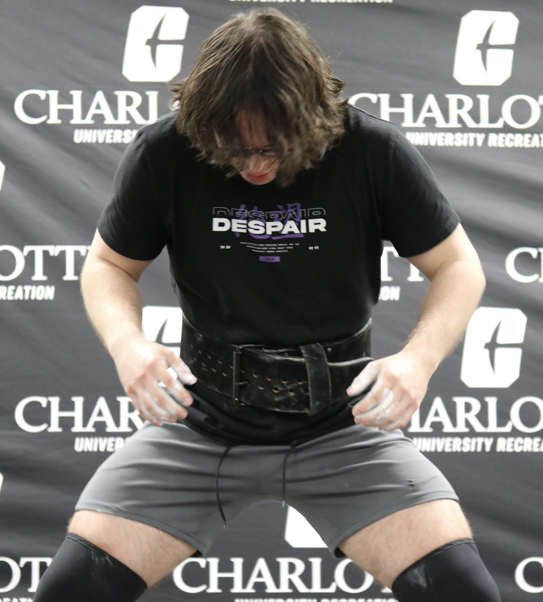

Deadlift Attempts at the Gold Bar Lifting Competition
Personal Background: I lived in Raleigh, NC for most of my life, then moved down here whenever college started. In my spare time,
I'm either at the gym lifting or playing games.
Professional Background: I've worked at Harris Teeter for around 4 years. I did Customer Service there for two, then switched to
Overnight stocking afterward, and I've been doing that since. I also interned at Juki Automation Systems for a couple months, while
I was an engineering major.
Academic Background: I started out in Mechanical Engineering, did that for two years, then switched to Computer Science around
a year and a half ago. I'm around a year and a half away from graduating at this point.
Background in this Subject: My first exposure to it was in middle school, I wasn't the biggest fan of coding in general back
then. Eventually, after coming to college, I had a moment where I needed to figure out what I wanted to do, and I figured that since I'm on
a computer for a lot of the day already, I might as well just pick up Computer Science, and I've enjoyed it ever since.
Primary Computer Platform: Usually Linux (Ubuntu) or Mac, I use Windows for personal stuff.
Courses I'm Taking & Why:
ITIS 3135 - Web Application Design and Development: I took this just to have a better understanding of how the internet
works, we use it all day and knowing how to make pages and understand them at a fundamental level sounds cool.
ITIS 3310 - Software Architecture and Design: I didn't really know what this course was- but it does seem like something
that will help me whenever I end up working on large-scale projects.
ITSC 3146 - Intro to Operating Systems and Networking: I still don't really know what this class was about, all we've
done is install Linux on a virtual machine. Maybe I'll figure out how an OS works or something.
ITSC 3155 - Software Engineering: This is kind of what I want to go into as a career when I graduate, so I had an
interest in this. It seems like it'll help me the most in my professional career.
Funny/Interesting Item to Remember me by: I stayed up for around 40 hours at one point because I lost track of time, and then
slept on the floor with a couch cushion as a pillow.